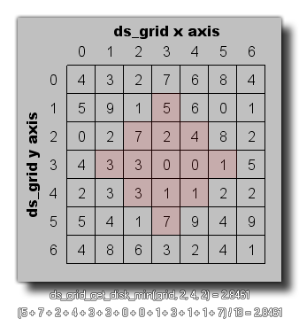

ds_grid_get_disk_mean(index, xm, ym, r);
| Argument | Description |
|---|---|
| index | The index of the grid. |
| xm | The x position of the disk on the grid. |
| ym | The y position of the disk on the grid. |
| r | The radius of the disk on the grid. |
Returns : Real or String
This function can be used to find the mean value for all the cells found within the defined disk area of a grid (all cell values are added together and then divided by the total number of cells that make up the disk),
as shown in the image below:

val = ds_grid_get_disk_mean(grid, 5, 5, 2);
The above code will set the variable "val" to the mean value contained within the given disk of the ds_grid indexed in the variable "grid".